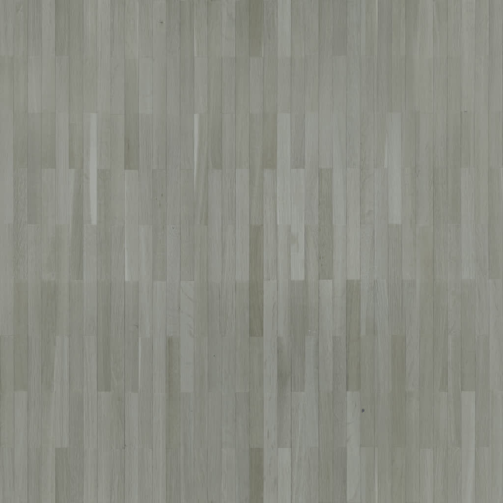

Floor look
Gray wash floor for a 12 by 10 living room
A 12 by 10 living room is about 120 square feet. With 10% waste, plan on about 132 square feet of gray wash flooring — roughly 7 boxes at 20 square feet per box. Check the coverage on your carton with the measure tool before you order.
